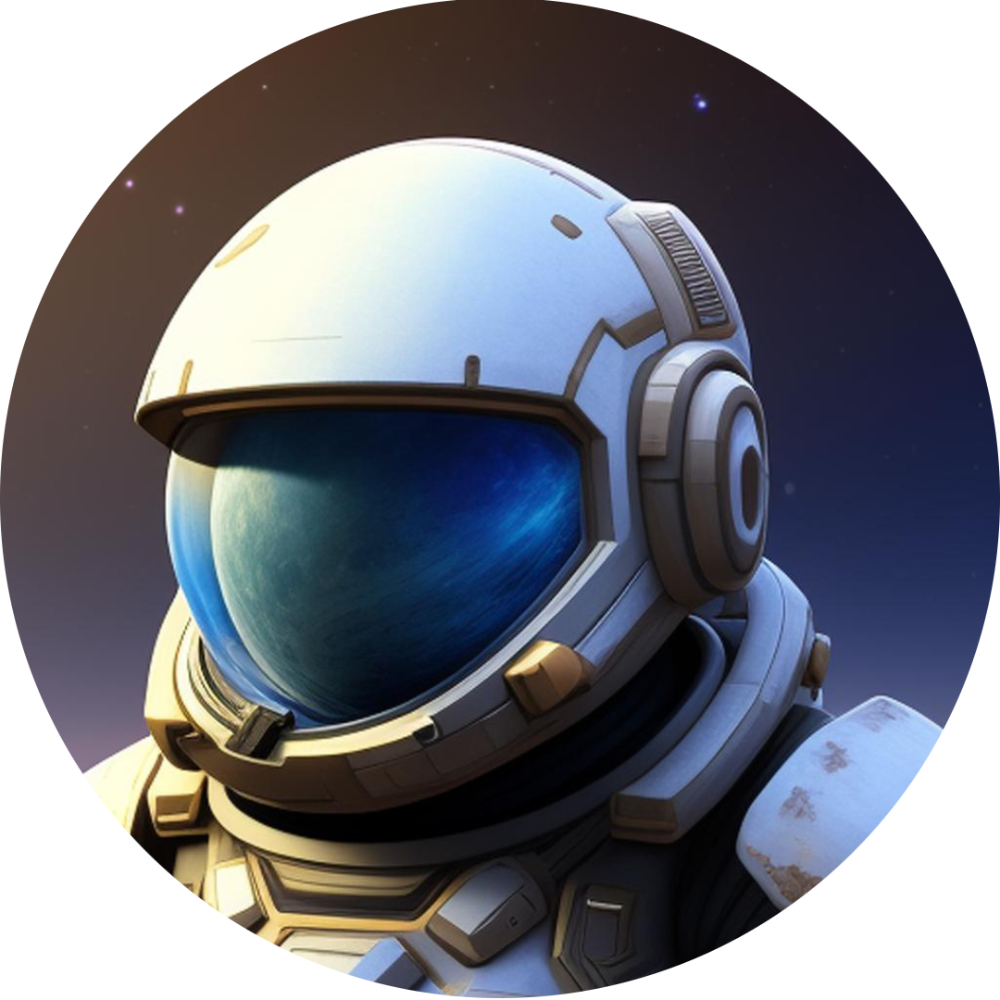
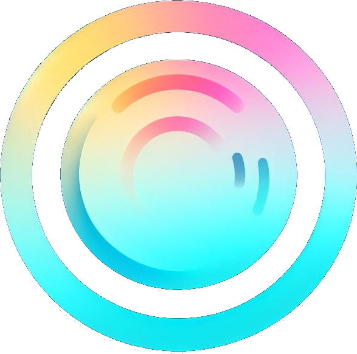

-

Portfolio
Vous y êtes actuellement! Il y a un début à tout et ce portfolio m'a permit de commencer le développement web.
Technologies : HTML / CSS / JS
Contexte : Réaliser au cours de ma formation en BTS SIO
-
LoanIT
Le premier projet réaliser en BTS SIO pour l'examen étant aussi le projet avec lequel j'ai appris le PHP.
Technologies : HTML / CSS / JS / PHP / SQLite / SQL
Contexte : Réaliser au cours de ma formation en BTS SIO
-

Celestial Conquest
Etant curieux sur le fonctionnement des bots sur Discord, j'ai souhaité en réaliser un. J'ai donc commencé à le développé, ce dernier a pour but d'occuper les personnes qui attendant leurs amis.
Technologies : JS / NodeJS / Discord API / SQLite
Contexte : Initiative personnelle
-

MOBP
Le second projet que j'ai réalisé pour l'examen du BTS SIO. Il ma permit de gagner en expérience en POO et aussi d'apprendre le flutter et découvrir Firebase.
Technologies : Dart / Flutter / Firebase
Contexte : Réaliser au cours de ma formation en BTS SIO
-

SoundSphere
Projet actuellement en cours de réalisation, réalisé pour le hackaton 2023/2024 à Ynov.
Technologies : Dart / Flutter / Firebase
Contexte : Réaliser au cours de ma formation en Bachelor Informatique
-
Space Discover
Souhaitant rajouter du contenu à un jeux vidéo populaire, je me suis lancer dans le développement d'une extension pour celui-ci.
Technologies : Java / Forge API
Contexte : Initiative personnelle
-

Hateful Madness
Dans l'optique de consolider nos compétences, un camarade et moi même avons décidé de développer un jeux vidéo en Java. Actuellement en pause.
Technologies : Java
Contexte : Initiative personnelle